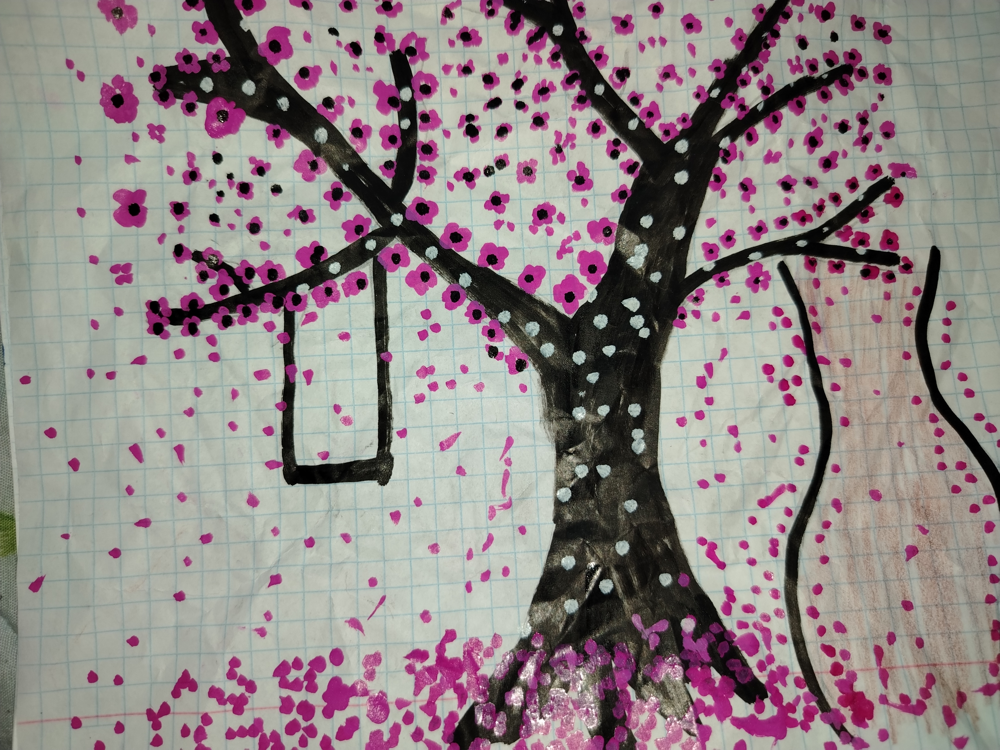
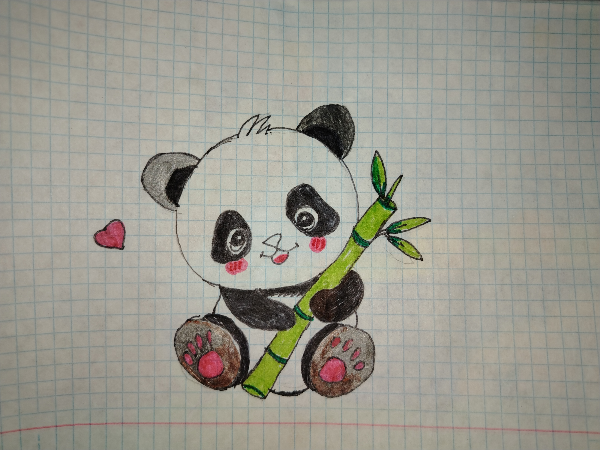

Роща сакуры
Приду я в рощу сакуры,
Где забываются тревоги,
Где край неземной красоты,
Где листья цветов у порога.
Иду по тропинке неспешно,
А по бокам — ковром поля.
Там дышится легко, безмятежно,
Словно душа нашла своё «я».

Осень наступила
Осень наступила, время загрустило,
Листья, облетая, падают, кружат.
С детворой в догонки осень закружила,
Листья под ногами весело шуршат.
Набегает скука, тихая печаль,
Но грустить не хочет детвора:
Скоро будут сани, снег и даль,
Бегать наперегонки с утра!

Бамбуковая роща (шуточный)
Приду в бамбуковую рощу,
Изобью панду за бамбук.
Семейная шутка (с дочерью)
Люблю зиму в начале мая
Люблю зиму в начале мая,
Когда сады цветут, и все в снегу,
И снега по колено, идёшь, придёшь
Среди снеговиков.
И снежный барс, махнув хвостом,
Удрал обратно в лес.
Поздняя осень
Познакомились мы с тобой поздней осенью,
Подумала — любовь, а оказалось — разочарование.
В жизни моей, а так-то всё хорошо:
Свидания, прогулки под дождём, поздние переписки.
Но жаль, что всё так быстро прошло.
Хочется рыдать, но жизнь не встала —
Она идёт вперёд.
Значит, и печалиться не зачем.
Пели птицы над моей головой
Пели птицы над моей головой,
Ветер шумел в листве над рекой.
Песня плывёт о доле несчастной,
О жизни, где всё слилось в одно:
И горе, и счастье, печаль, и радость —
Всё в этой песне сплетено.
Летит эта песня в далёкие края,
Туда, где когда-то жила любовь моя,
Где счастье светило в тишине.
Песня печальная, без конца,
Но где-то в далёком краю
Ей придумали финал.